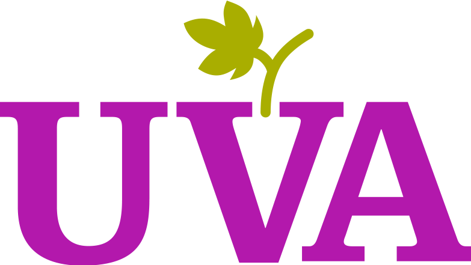

<ion-header>

  <ion-toolbar color="uva_color">

    <button ion-button clear color="light" menuToggle>
      <ion-icon class="logo_icon" name="menu"></ion-icon>
    </button>

    


  </ion-toolbar>

</ion-header>


<ion-content padding>

</ion-content>
